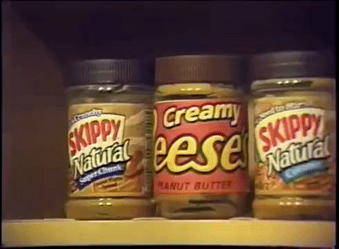

The Worst 90's Website

How to make a PB&J
Acquiring Bread
First, you need to go the store to get some bread. Any kind of bread will do, but popular breads include white and wheat.
Choosing Peanut Butter
Another crucial ingredient in the PB&J is peanut butter. I prefer creamy, but some people prefer their peanut butter to be crunchy.

Choosing Jelly
Most people prefer grape jelly, but depending on who will eat the sandwich, another flavor may also be appropriate.
Be careful when deviating. In elementary school, I read a story where having the wrong kind of jelly was one of the criteria for classifying a day as "bad".
Assembling the Sandwich
When making the PB&J, it's important to have a good balance of peanut butter to jelly. Again, the perfect ratio depends on who will be eating the sandwich, and this requires some experimentation.
Building a full sandwich
If you want a full meal (not counting desert), try going for a full sandwich.
1. Using a butter knife, spread the peanut butter on one side of one piece of bread. Using a steak knife is optional, but not recommended.
2. Using another butter knife, spread the jelly on one side of another piece of bread. Using the same knife from step 1 is acceptable but not recommended, as peanut butter may find its way into the jelly jar. If you want a lot of jelly, using a spoon is also acceptable.
3. Put the pieces of bread together, so that the peanut butter and jelly make contact.
4. Building a half sandwich
If you just want a snack, try half a sandwich.
1. Using a butter knife, spread the peanut butter on half of one side of one piece of bread. Using a steak knife is optional, but not recommended.
2. Using another butter knife, spread the jelly on the other half of the same side of the same piece of bread from step 1. Using the same knife from step 1 is acceptable but not recommended, as peanut butter may find its way into the jelly jar. If you want a lot of jelly, using a spoon is also acceptable.
3. Fold the piece of bread in half along the peanut butter/jelly divide so that the peanut butter and jelly make contact.
Copyright: ME!!!